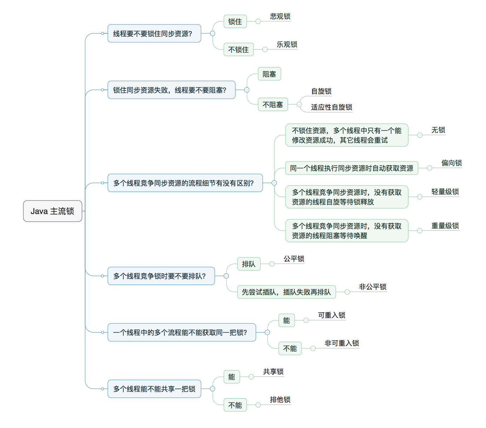
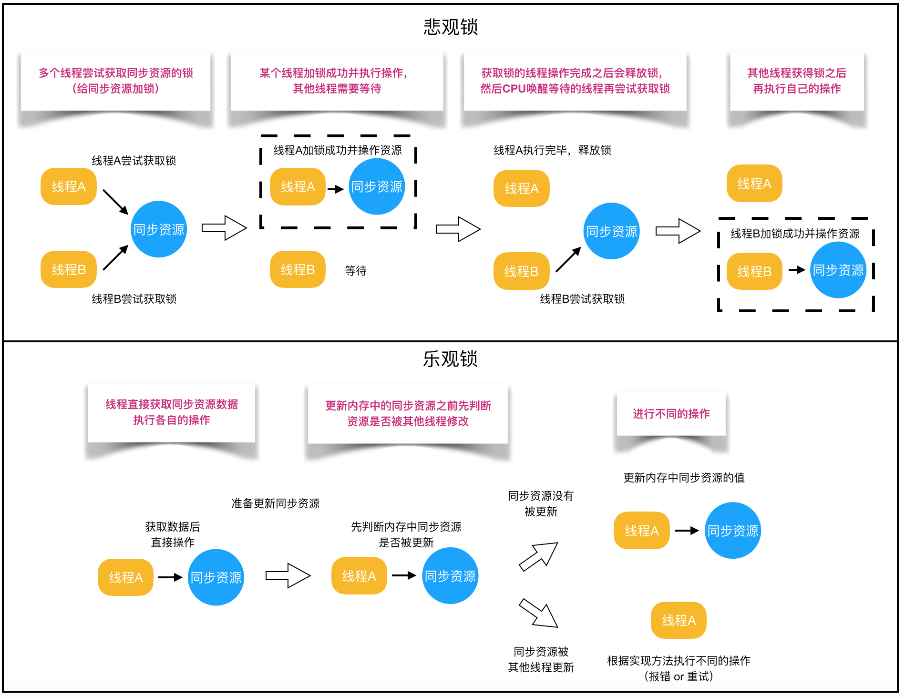
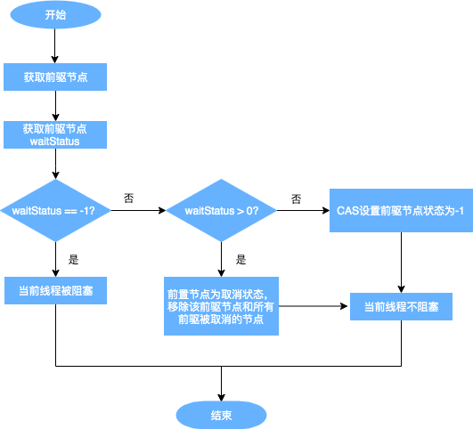
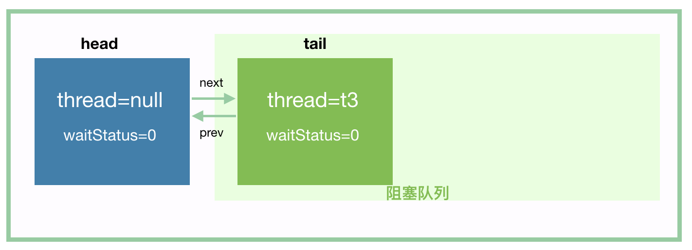

publicenumState { /** * Thread state for a thread which has not yet started. */ NEW,
/** * Thread state for a runnable thread. A thread in the runnable * state is executing in the Java virtual machine but it may * be waiting for other resources from the operating system * such as processor. */ RUNNABLE,
/** * Thread state for a thread blocked waiting for a monitor lock. * A thread in the blocked state is waiting for a monitor lock * to enter a synchronized block/method or * reenter a synchronized block/method after calling * {@link Object#wait() Object.wait}. */ BLOCKED,
/** * Thread state for a waiting thread. * A thread is in the waiting state due to calling one of the * following methods: * <ul> * <li>{@link Object#wait() Object.wait} with no timeout</li> * <li>{@link #join() Thread.join} with no timeout</li> * <li>{@link LockSupport#park() LockSupport.park}</li> * </ul> * * <p>A thread in the waiting state is waiting for another thread to * perform a particular action. * * For example, a thread that has called <tt>Object.wait()</tt> * on an object is waiting for another thread to call * <tt>Object.notify()</tt> or <tt>Object.notifyAll()</tt> on * that object. A thread that has called <tt>Thread.join()</tt> * is waiting for a specified thread to terminate. */ WAITING,
/** * Thread state for a waiting thread with a specified waiting time. * A thread is in the timed waiting state due to calling one of * the following methods with a specified positive waiting time: * <ul> * <li>{@link #sleep Thread.sleep}</li> * <li>{@link Object#wait(long) Object.wait} with timeout</li> * <li>{@link #join(long) Thread.join} with timeout</li> * <li>{@link LockSupport#parkNanos LockSupport.parkNanos}</li> * <li>{@link LockSupport#parkUntil LockSupport.parkUntil}</li> * </ul> */ TIMED_WAITING,
/** * Thread state for a terminated thread. * The thread has completed execution. */ TERMINATED; }
很多 AtomicXXX 原子类，底层都依赖于 Unsafe 的 CAS offset、old value、new value操作。
increaseAndGet 与 getAndIncrease
所有的 increaseAndGet 都是由 getAndIncrease 支撑起来的：
1 2 3 4 5 6 7 8 9
// OpenJDK 8 publicfinalintgetAndAddInt(Objet obj, long offset, int delta) { int v; do { v = getIntVolatile(o, offset); // 整个“比较+更新”操作封装在 compareAndSwapInt() 中，在 JNI 里是借助于一个 CPU 指令（cmpxchg）完成的，属于原子操作，可以保证多个线程都能够看到同一个变量的修改值。 } while (!compareAndSwapInt(obj, v, v + delta)) return v; }
通常是 action prior to some release opertion happen-before action following acquire operation。
比如 Semaphore 的 memory consistency effect：Actions in a thread prior to calling a “release” method such as release() happen-before actions following a successful “acquire” method such as acquire() in another thread.
主流锁

悲观锁与乐观锁

悲观锁适合写操作多的场景，先加锁可以保证写操作时数据正确。
乐观锁适合读操作多的场景，不加锁的特点能够使其读操作的性能大幅提升。
AQS（AbstractQueuedSynchronizer）
JUC 有个 locks 包，所有的锁和基于锁的并发基础设施都在这个包里隐藏。这些数据结构被称为同步器，而同步器本身是为了并发安全而存在的（相应地应该也存在原子化的解决方案、隔离的解决方案，我们改天再探讨）。AQS 是为了实现同步器而设计的框架，作为 basis of a synchronizer（同步器的依据），它提供了 queuing and blocking mechanic。
AQS 并不是最初的基类，它能够被 Thread Own 这个特性，来自于 AbstractOwnableSynchronizer。它对 Own 的表达方式在于保存一个线程句柄-exclusiveOwnerThread。和锁（Monitor）的markword里保留一个对象头的设计思路是很相似的。
AQS 提供两种模式：
独占 exclusive（这是缺省模式）：当以独占模式获取时，尝试通过其他线程获取不能成功。When acquired in exclusive mode, attempted acquires by other threads cannot succeed.
共享 share：共享模式通常会成功，但实际上不一定。Shared mode acquires by multiple threads may (but need not) succeed.这和其他提供共享锁机制的软件实现（如 MySQL）还是不一样的。当共享模式获取成功时，下一个等待线程（如果存在）也必须确定它是否也可以获取-也就是说阻塞是决定后的结果。 when a shared mode acquire succeeds, the next waiting thread (if one exists) must also determine whether it can acquire as well.
各种 Sync 的标准格式应该是Subclasses should be defined as non-public internal helper classes（非公共内部助手类） that are used to implement the synchronization properties of their enclosing class（封闭类）。
CLH 是一种 lock queue，normally used for spinlocks，but here used for blocking synchronizers。
这个 ADT 的 basic tatic 是holding some of the control information about a thread in the predecessor of its node。即本节点是否需要被 SIGNAL（parked - signaled- unparked），是由前一个节点决定的。
A “status” field in each node keeps track of whether a thread should block.
一个 node 是不是需要 block 需要由 status field 决定。实际上一个 field 的 status 为 SIGNAL 必然导致它的 successor parked（形成 blocked）。
A node is signalled when its predecessor releases.
release 里会附带一个 unparked successor 操作，而第一个 acquire 的入队会让出队自动进入一个 for-loop，不断 tryAcquire。
The status field does NOT control whether threads are granted locks etc though.
线程求锁就是它成为队头，队头的 thread 本身为 null。真正 hold thread 的地方只剩下 exclusiveOwnerThread。
入队是作尾，出队是作头。被唤醒不一定得到锁-如果不是公平锁的话。
The “prev” links (not used in original CLH locks), are mainly needed to handle cancellation. If a node is cancelled, its successor is (normally) relinked to a non-cancelled predecessor.
prev 让这个链表变成双向的，主要是为了让 cancelled 的node 的 next 找到新的 predecessor。
next 的用意是为了让 a predecessor signals the next node to wake up by traversing next link to determine which thread it is. next 是可能有争议的，CLH 的算法的用意是在一个节点的 successor 看起来是 null 的时候，对 tail 进行回溯检查-见 unparkSuccessor 里面寻找 null 的方法，这是基于 tail 是 atomically updated 的假定。
CLH 的 head 最初就是 dummy 的，node 被设置为 head 的时候也会变成 dummy 的。
Threads waiting on Conditions use the same nodes, but use an additional link. Conditions only need to link nodes in simple (non-concurrent) linked queues because they are only accessed when exclusively held. Upon await, a node is inserted into a condition queue. Upon signal, the node is transferred to the main queue. A special value of status field is used to mark which queue a node is on.
condition 有一个单独的 condition queue，和 main queue 使用同一批节点，但使用 additional link。
// 所以 tryAcquire 可以用非阻塞实现阻塞，tryAcquire 是一切 aqs 操作的灵魂 // 1. 试获取（改 state 和ownerThread）2. 入队 Acquire: // 自旋带来阻塞，没有 sleep，这里就没有引入 clh 的 block while (!tryAcquire(arg)) { enqueue thread if it is not already queued; possibly block current thread;// 可以 block 也可以不 block，要看入队以后第二次 tryAcquire 的结果，以及 predecessor 的 waitStatus }
Release: // 1.试释放（改 state 和ownerThread）2. 尝试唤醒 successor，不需要出队，因为作为头部就已经算是出队了 if (tryRelease(arg)) // 尝试唤醒，这里的伪代码实际上漏掉了实现中存在的 unpark unblock the first queued thread;
/** * Link to the successor node that the current node/thread * unparks upon release. Assigned during enqueuing, adjusted * when bypassing cancelled predecessors, and nulled out (for * sake of GC) when dequeued. The enq operation does not * assign next field of a predecessor until after attachment, * so seeing a null next field does not necessarily mean that * node is at end of queue. However, if a next field appears * to be null, we can scan prev's from the tail to * double-check. The next field of cancelled nodes is set to * point to the node itself instead of null, to make life * easier for isOnSyncQueue. */ volatile Node next;
/** * Link to predecessor node that current node/thread relies on * for checking waitStatus. Assigned during enqueuing, and nulled * out (for sake of GC) only upon dequeuing. Also, upon * cancellation of a predecessor, we short-circuit while * finding a non-cancelled one, which will always exist * because the head node is never cancelled: A node becomes * head only as a result of successful acquire. A * cancelled thread never succeeds in acquiring, and a thread only * cancels itself, not any other node. */ volatile Node prev;
/** * Link to the successor node that the current node/thread * unparks upon release. Assigned during enqueuing, adjusted * when bypassing cancelled predecessors, and nulled out (for * sake of GC) when dequeued. The enq operation does not * assign next field of a predecessor until after attachment, * so seeing a null next field does not necessarily mean that * node is at end of queue. However, if a next field appears * to be null, we can scan prev's from the tail to * double-check. The next field of cancelled nodes is set to * point to the node itself instead of null, to make life * easier for isOnSyncQueue. */ volatile Node next;
/** * Marker to indicate a node is waiting in shared mode */ staticfinalNodeSHARED=newNode();
/** * Marker to indicate a node is waiting in exclusive mode */ staticfinalNodeEXCLUSIVE=null;
Node() { // Used to establish initial head or SHARED marker } // SHARED 和 EXCLUSIVE 其实是用来指向 nextWaiter 的，这里隐含一个假设，非互斥获锁的前提下不需要使用条件变量，缺省情况下 EXCLUSIVE 才是 null Node(Thread thread, Node mode) { // Used by addWaiter this.nextWaiter = mode; this.thread = thread; }
/** * Sets head of queue to be node, thus dequeuing. Called only by * acquire methods. Also nulls out unused fields for sake of GC * and to suppress unnecessary signals and traversals. * * @param node the node */ privatevoidsetHead(Node node) { head = node; // 在这里只从 node 视角进行操作，node.prev.next 的 unlink 操作留给外部的 node.prev 自己做 // 获取锁以后，算是出了 waiting-set 了，本 node 只是给 aqs 管理队列用，所以解除了对 thread 的引用，防止 thread 不能被回收 // 这个 node hold thread 和 status 都不算让 thread hold lock，node as head 算是让 thread 加了锁 node.thread = null; // head 不应该有 prev 的，因为这不是循环链表 node.prev = null; }
/** * Checks and updates status for a node that failed to acquire. * Returns true if thread should block. This is the main signal * control in all acquire loops. Requires that pred == node.prev. * * @param pred node's predecessor holding status * @param node the node * @return {@code true} if thread should block */ privatestaticbooleanshouldParkAfterFailedAcquire(Node pred, Node node) { // 这个状态机很有意思，这意味着我们的每一个 node 的实际状态是应该由前一个node（即 pred）来决定的 intws= pred.waitStatus; // 前一个节点的 SIGNAL 状态，意味着后一个线程的 unpark。 if (ws == Node.SIGNAL) /* * This node has already set status asking a release * to signal it, so it can safely park. */ // 被 signal 以后反而会触发 park。这里的 signal 指的是 asking a release to signal it，通过 park 来等 unpark 来进入下一个循环的入口 // 通常我们要进入队列就是要 park 的。 returntrue; // 这里的大于零此时专指 CANCELLED，以后 cancelled 类的状态都必须大于零（反过来也一样） if (ws > 0) { /* * Predecessor was cancelled. Skip over predecessors and * indicate retry. */ do { // 链表自动做一个小的收窄，所有的 cancelled 线程要排出本链表，这里是自动把本 node 的prev跳了一下，为什么不会有并发问题安全问题还是不太容易看明白 node.prev = pred = pred.prev; } while (pred.waitStatus > 0); // 缩进玩 pred.next = node; } else { /* * 这里引入了一个对状态机的隐式推导，可读性不太好。作者断言，此处要么是 0，要么是 PROPAGATE。CONDITION 也就是 -2 不会进入这个方法，因为 CONDITION 在另一个队伍里 * waitStatus must be 0 or PROPAGATE. Indicate that we * need a signal, but don't park yet. Caller will need to * retry to make sure it cannot acquire before parking. * 此时我们需要一个 signal，但还不需要 park */ // 否则尝试将 pred 的status 置为 SIGNAL，这样下一轮循环的时候，就可以进入 park，然后等 unpark了 // 也就意味着，这个 CLH 里的队列的每个 node 都天然需要自己的前驱是 SIGNAL 才正常。最初入队的 thread addWaiter 的时候会初始化一个 dummy head，然后进入这里，把这个 head 设置为 Node.SIGNAL。然后下一轮循环进到这里来，会从上面的 return true 那里出去。等于每一个节点是由它的后继节点的 acquiredQueued() 的第一次 for loop 设置为 SIGNAL 的。 compareAndSetWaitStatus(pred, ws, Node.SIGNAL); } // 本次检查先不park，不 park 则外部可能就直接进入下一轮循环，尝试抢锁，失败再看要不要 park returnfalse; }
这个配置告诉我们几个已知事实：每个节点的 waitStatus 状态，在主流程里是由后面的排队的 next 的入队来触发变化的。

parkAndCheckInterrupt
1 2 3 4 5 6
privatefinalbooleanparkAndCheckInterrupt() { // 入队和每次 for 循环被唤醒抢不到锁，然后又需要 park，就会进入本方法 park 一次 LockSupport.park(this); return Thread.interrupted(); }
// predNext is the apparent node to unsplice. CASes below will // fail if not, in which case, we lost race vs another cancel // or signal, so no further action is necessary. NodepredNext= pred.next;
// Can use unconditional write instead of CAS here. // After this atomic step, other Nodes can skip past us. // Before, we are free of interference from other threads. node.waitStatus = Node.CANCELLED;
// 在这里只做一个逻辑二分，只解决是不是队尾的问题，不区分队中和队头，如果是队尾则不用管 node next // If we are the tail, remove ourselves. if (node == tail && compareAndSetTail(node, pred)) { // 尾节点不需要 next，直接清空，因为中间节点实际上都是 cancelled 的节点 compareAndSetNext(pred, predNext, null); } else { // 如果要处理 next，也有两种思路：把 pred 的next link 和 本 node 的 next 连起来，或者直接unpark node 的 next，总之本 node 的 next 得到了很好的处理 // If successor needs signal, try to set pred's next-link // so it will get one. Otherwise wake it up to propagate. int ws;
// pred 的节点自身是 SIGNAL 和 cas 成 SIGNAL 是等效的，这是 Doug Lea 的习惯 if (pred != head && ((ws = pred.waitStatus) == Node.SIGNAL || (ws <= 0 && compareAndSetWaitStatus(pred, ws, Node.SIGNAL))) && pred.thread != null) { Nodenext= node.next; if (next != null && next.waitStatus <= 0) // prev 是不怕有并发安全问题的，但 next 一定要使用 compareAndSetNext，也就是说 prev 寻址出错不要紧，但 next 寻址出错要紧，这是容易被忽略的 compareAndSetNext(pred, predNext, next); } else { // 不属于上面的情况，即 pread 是头或者 pred 的状态不为 signal（即使在 cas 设置过后）或者 pred 的线程为空，则对 succesor 进行 unpark 操作，所以 succesor unpark 不是常态 unparkSuccessor(node); } // 清除完 prev，最后再清除 next，即本方法主要是对 next 负责，不对 pred 负责 node.next = node; // help GC } }
/** * 这一段代码是 ReentrantLock 里的，解锁也是一个抽象方法，跨公平锁和非公平锁 * Attempts to release this lock. * * <p>If the current thread is the holder of this lock then the hold * count is decremented. If the hold count is now zero then the lock * is released. If the current thread is not the holder of this * lock then {@link IllegalMonitorStateException} is thrown. * * @throws IllegalMonitorStateException if the current thread does not hold this lock */ publicvoidunlock() { sync.release(1); }
解锁也依赖于壳方法。
release
release 也分双重，需要复写的只有 tryRelease，管理状态用这个方法不管公平不公平，统一 tryRelease + unparkSuccessor head
/** * Releases in exclusive mode. Implemented by unblocking one or * more threads if {@link #tryRelease} returns true. * This method can be used to implement method {@link Lock#unlock}. * * @param arg the release argument. This value is conveyed to * {@link #tryRelease} but is otherwise uninterpreted and * can represent anything you like. * @return the value returned from {@link #tryRelease} */ publicfinalbooleanrelease(int arg) { // 这里的 tryRelease 的返回结果是是否完全释放的意思 if (tryRelease(arg)) { Nodeh= head; // 这里的 != 0 就是 SIGNAl 的意思 // 只要/只有完全释放了 state 才唤醒 h 的继任者 // ws > 0，h 取消了；ws < 0，要么是 PROPAGATE，要么是 SIGNAL，从语义上来讲后继节点就是一个阻塞态。换言之，如果head是初始节点，则不需要 unpark 后继 if (h != null && h.waitStatus != 0) unparkSuccessor(h); returntrue; } returnfalse; }
/** * */ privatevoidunparkSuccessor(Node node) { /* * If status is negative (i.e., possibly needing signal) try * to clear in anticipation of signalling. It is OK if this * fails or if status is changed by waiting thread. */ intws= node.waitStatus; if (ws < 0) // 把本 node 设置为非状态机的初始态 compareAndSetWaitStatus(node, ws, 0);
/* * Thread to unpark is held in successor, which is normally * just the next node. But if cancelled or apparently null, * traverse backwards from tail to find the actual * non-cancelled successor. */ Nodes= node.next; if (s == null || s.waitStatus > 0) { s = null; // 从尾部开始遍历，直到要 unpark 的节点是尾部的第一个 waitStatus 为负数的 node for (Nodet= tail; t != null && t != node; t = t.prev) if (t.waitStatus <= 0) s = t; } // 找到即唤醒它 if (s != null) // node 里持有 thread 的用意就是让外围的 lockSupport 来引用和 unpark LockSupport.unpark(s.thread); }
Where a Lock replaces the use of synchronized methods and statements, a Condition replaces the use of the Object monitor methods. 在原始的 Java 锁机制里面，synchronized 被叫作 synchronized methods，而 condition 被叫作 monitor methods。
finalbooleanisOnSyncQueue(Node node) { if (node.waitStatus == Node.CONDITION || node.prev == null) returnfalse; if (node.next != null) // If has successor, it must be on queue returntrue; /* * node.prev can be non-null, but not yet on queue because * the CAS to place it on queue can fail. So we have to * traverse from tail to make sure it actually made it. It * will always be near the tail in calls to this method, and * unless the CAS failed (which is unlikely), it will be * there, so we hardly ever traverse much. */ return findNodeFromTail(node); }
// 这个方法是给中断 CancelledWait 用的 finalbooleantransferAfterCancelledWait(Node node) { // 如果改变 ws成功，则应该抛出中断异常 if (compareAndSetWaitStatus(node, Node.CONDITION, 0)) { enq(node); returntrue; } /* * 上面失败就意味着发生了一个 race condition，如果是 signal 赢了，则实际上不应该抛出异常 * If we lost out to a signal(), then we can't proceed * until it finishes its enq(). Cancelling during an * incomplete transfer is both rare and transient, so just * spin. */ while (!isOnSyncQueue(node)) Thread.yield(); returnfalse; }
把前驱 cas 设置成 SIGNAL 失败或者前驱节点已经取消，尝试直接 unpark 这个 node。然后就让 await 方法的 isOnSyncQueue 走剩下的流程。
返回操作为 true。
1 2 3 4 5 6 7 8 9 10 11 12 13 14 15 16 17 18
/** * 注意看这个方法，只要 isHeldExclusively 不正常，则这个方法会抛出 IllegalMonitorStateException * Moves the longest-waiting thread, if one exists, from the * wait queue for this condition to the wait queue for the * owning lock. * * @throws IllegalMonitorStateException if {@link #isHeldExclusively} * returns {@code false} */ publicfinalvoidsignal() { // 检查是不是在锁的控制范围内 if (!isHeldExclusively()) thrownewIllegalMonitorStateException(); Nodefirst= firstWaiter; // 只取非空 first 作为 doSignal 对象 if (first != null) doSignal(first); }
/** * * Removes and transfers nodes until hit non-cancelled one or * null. Split out from signal in part to encourage compilers * to inline the case of no waiters. * @param first (non-null) the first node on condition queue */ privatevoiddoSignal(Node first) { do { // 首先用 frist.next 来顶掉 firstwaiter，如果 first.next 为空，则清空本队列 if ( (firstWaiter = first.nextWaiter) == null) lastWaiter = null; // unlink first 到 next waiter 的联系 first.nextWaiter = null; // 如果 transferForSignal 成功，循环中止，否则必定是 node 被 cancelled 了，这时候要把 firstWaiter 赋值回 first，看看是不是还能找到 non-null 继续循环 } while (!transferForSignal(first) && (first = firstWaiter) != null); } ```
/* * If cannot change waitStatus, the node has been cancelled. * 假定，condition queue中的节点一定是 CONDITION，不会再变 * 这是本方法第一次试图 cas 改变一个 node，其实此时如果失败，意味着本节点是 cancelled 的，应该返回 false */ if (!compareAndSetWaitStatus(node, Node.CONDITION, 0)) returnfalse;
/* * Splice onto queue and try to set waitStatus of predecessor to * indicate that thread is (probably) waiting. If cancelled or * attempt to set waitStatus fails, wake up to resync (in which * case the waitStatus can be transiently and harmlessly wrong). */ Nodep= enq(node); intws= p.waitStatus; // 如果前驱节点已取消，本 node 应该直接 unpark；或者前驱节点不能设置为 SIGNAL-此处不需要等到下轮循环再设置了，要把本 node 做一个 unpark，交给 await中的循环处理。 // 什么情况下 compareAndSetWaitStatus 会失败呢？p 是前驱节点的意思，p 被人动过，这也就意味着此处的 cas已经无意义了 // 这是第二个地方用 cas 检查 node 的前驱，如果失败，通过 unpark 让 acquiredQueued 来试图收窄链表 if (ws > 0 || !compareAndSetWaitStatus(p, ws, Node.SIGNAL)) // 注意，node.thread 已经在await 的循环里 park了，此处的 enq 帮那个循环省略了从中断中 enq 的动作，它会在 await 方法里进入 acquireQueued，再尝试求锁解锁，这种直接唤醒重新入队的方法，被作者称作 resync。 LockSupport.unpark(node.thread); // 但如果不 unpark，直接返回，则对于 node.thread 的 unpark 需要等到 unlock 底层的 release returntrue; }
/** * Acquires in shared mode, aborting if interrupted. Implemented * by first checking interrupt status, then invoking at least once * {@link #tryAcquireShared}, returning on success. Otherwise the * thread is queued, possibly repeatedly blocking and unblocking, * invoking {@link #tryAcquireShared} until success or the thread * is interrupted. * @param arg the acquire argument. * This value is conveyed to {@link #tryAcquireShared} but is * otherwise uninterpreted and can represent anything * you like. * @throws InterruptedException if the current thread is interrupted */ publicfinalvoidacquireSharedInterruptibly(int arg) throws InterruptedException { if (Thread.interrupted()) thrownewInterruptedException();
// 这里小于0意味着 state 还是保持在 sync 的 state 非0的状态，才可以进入 doAcquireSharedInterruptibly 阻塞；否则就是已经被扣减到头了，就直接返回了，这会导致上层的 await 直接返回，这就是很多的事后 await 会直接返回的原理。这种 if (tryAcquireShared(arg) < 0) doAcquireSharedInterruptibly(arg); }

在互斥类的 acquire 里面，只有 state 不为0（已被其他线程获取锁）会导致入队。在共享类的 acquire 里，只要 state 不为 0，也入队，反复自旋，直到 state 为 0 才导致出队，让 await 降为0。
privatevoidsetHeadAndPropagate(Node node, int propagate) { Nodeh= head; // Record old head for check below setHead(node); /* * Try to signal next queued node if: * Propagation was indicated by caller, * or was recorded (as h.waitStatus either before * or after setHead) by a previous operation * (note: this uses sign-check of waitStatus because * PROPAGATE status may transition to SIGNAL.) * and * The next node is waiting in shared mode, * or we don't know, because it appears null * * The conservatism in both of these checks may cause * unnecessary wake-ups, but only when there are multiple * racing acquires/releases, so most need signals now or soon * anyway. */ if (propagate > 0 || h == null || h.waitStatus < 0 || (h = head) == null || h.waitStatus < 0) { Nodes= node.next; // shared mode 的模式在此处生效产生了一个和普通的 setHead 不同的效应，它会产生一个 doReleaseShared if (s == null || s.isShared()) doReleaseShared(); } }
doReleaseShared
这个方法特别难，普通 tryRelease 是改动 aqs 的自身状态，但 doReleaseShared 依赖于 tryReleaseShared 的返回结果，只专心处理从 head 开始的 ws 问题，然后对 head 的后继进行 unpark。这个节点会让所有卡在 countDownLatch 的计时条件上的线程都越过门槛本身。因为 tryReleaseShared 已经把 state 扣减为0，此处做的主要是 unpark + 改 ws，doAcquireSharedInterruptibly 那里就会自己直接返回。
privatevoiddoReleaseShared() { /* * Ensure that a release propagates, even if there are other * in-progress acquires/releases. This proceeds in the usual * way of trying to unparkSuccessor of head if it needs * signal. But if it does not, status is set to PROPAGATE to * ensure that upon release, propagation continues. * Additionally, we must loop in case a new node is added * while we are doing this. Also, unlike other uses of * unparkSuccessor, we need to know if CAS to reset status * fails, if so rechecking. */ for (;;) { Nodeh= head; // 1. h == null: 说明阻塞队列为空 // 2. h == tail: 说明头结点可能是刚刚初始化的头节点， // 或者是普通线程节点，但是此节点既然是头节点了，那么代表已经被唤醒了，阻塞队列没有其他节点了 // 所以这两种情况不需要进行唤醒后继节点 if (h != null && h != tail) { intws= h.waitStatus; if (ws == Node.SIGNAL) { // head 如果能够被从 SIGNAL 设为 0，则 unpark head 的下一个节点，否则循环 recheck if (!compareAndSetWaitStatus(h, Node.SIGNAL, 0)) continue; // loop to recheck cases // 就是这里，唤醒 head 的后继节点，也就是阻塞队列中的第一个节点 unparkSuccessor(h); } // head 如果已经是 0，则把它设置为 PROPAGATE elseif (ws == 0 && !compareAndSetWaitStatus(h, 0, Node.PROPAGATE)) continue; // loop on failed CAS } if (h == head) // loop if head changed break; } }
/** The lock for guarding barrier entry */ privatefinalReentrantLocklock=newReentrantLock();
// 触动开关 /** Condition to wait on until tripped */ privatefinalConditiontrip= lock.newCondition();
/** The number of parties */ // 这个数字不可扣减 privatefinalint parties;
/* The command to run when tripped */ privatefinal Runnable barrierCommand;
/** * 这个数字可以扣减 * Number of parties still waiting. Counts down from parties to 0 * on each generation. It is reset to parties on each new * generation or when broken. */ privateint count;
其次，generation 的部分：
1 2 3 4 5 6 7 8 9 10 11 12 13 14 15 16 17
/** * Each use of the barrier is represented as a generation instance. * The generation changes whenever the barrier is tripped, or * is reset. There can be many generations associated with threads * using the barrier - due to the non-deterministic way the lock * may be allocated to waiting threads - but only one of these * can be active at a time (the one to which {@code count} applies) * and all the rest are either broken or tripped. * There need not be an active generation if there has been a break * but no subsequent reset. */ privatestaticclassGeneration { booleanbroken=false; }
/** The current generation */ privateGenerationgeneration=newGeneration();
/** * Creates a new {@code CyclicBarrier} that will trip when the * given number of parties (threads) are waiting upon it, and which * will execute the given barrier action when the barrier is tripped, * performed by the last thread entering the barrier. * * @param parties the number of threads that must invoke {@link #await} * before the barrier is tripped * @param barrierAction the command to execute when the barrier is * tripped, or {@code null} if there is no action * @throws IllegalArgumentException if {@code parties} is less than 1 */ publicCyclicBarrier(int parties, Runnable barrierAction) { if (parties <= 0) thrownewIllegalArgumentException(); this.parties = parties; this.count = parties; this.barrierCommand = barrierAction; }
/** * Creates a new {@code CyclicBarrier} that will trip when the * given number of parties (threads) are waiting upon it, and * does not perform a predefined action when the barrier is tripped. * * @param parties the number of threads that must invoke {@link #await} * before the barrier is tripped * @throws IllegalArgumentException if {@code parties} is less than 1 */ publicCyclicBarrier(int parties) { this(parties, null); }
await
这个方法既会返回，也会抛出异常。
它的返回值是：the arrival index of the current thread, where index getParties() - 1 indicates the first to arrive and zero indicates the last to arrive。也就是说，如果有5个线程在等，await == 4 意味着第一个返回，await == 0 意味着最后一个返回。然后可以这样做：
1 2 3 4
// 这里的 await 是支持 happen-before 语义的，在 await 返回的那一刻即返回 if (barrier.await() == 0) { // log the completion of this iteration }
// 非 last 动作，则只有3种方式返回 // loop until tripped, broken, interrupted, or timed out for (;;) { try { // 区分计时和非计时的等待，然后在自旋里工作 if (!timed) trip.await(); elseif (nanos > 0L) // an estimate of the nanosTimeout value minus the time spent waiting upon return from this method. A positive value may be used as the argument to a subsequent call to this method to finish waiting out the desired time. A value less than or equal to zero indicates that no time remains. // 这个 nanos 可能成为负数，为我们超时异常提供了依据 nanos = trip.awaitNanos(nanos); } catch (InterruptedException ie) { // 如果此时本代仍然是同一代，则尝试破坏栅栏（这是为了让同一代里 breakBarrier 式退出 exactly once） if (g == generation && ! g.broken) { breakBarrier(); throw ie; } else { // 如果不需要我们破坏动作，根据标准协议，收到 InterruptedException 我们也要中断线程，作为响应。 // 我们要理解一个巨大的差别：在当代的中断我们是要忠实地履行方法签名的行为，抛出异常，不在当代则静默地中断自己 // We're about to finish waiting even if we had not // been interrupted, so this interrupt is deemed to // "belong" to subsequent execution. Thread.currentThread().interrupt(); } }
// await 的正常返回带来的后置检查，这里的 g是当前代数 if (g.broken) thrownewBrokenBarrierException();
privatevoidnextGeneration() { // signal completion of last generation trip.signalAll(); // set up next generation count = parties; generation = newGeneration(); }
/** * Resets the barrier to its initial state. If any parties are * currently waiting at the barrier, they will return with a * {@link BrokenBarrierException}. Note that resets <em>after</em> * a breakage has occurred for other reasons can be complicated to * carry out; threads need to re-synchronize in some other way, * and choose one to perform the reset. It may be preferable to * instead create a new barrier for subsequent use. */ publicvoidreset() { finalReentrantLocklock=this.lock; lock.lock(); try { // 老线程要通过闭包里闭合的局部变量理解 break breakBarrier(); // break the current generation // 新线程使用隔离的 generation nextGeneration(); // start a new generation // reset 意味着 count 再次等于 parties } finally { lock.unlock(); } }
/** * Returns the number of parties currently waiting at the barrier. * This method is primarily useful for debugging and assertions. * * @return the number of parties currently blocked in {@link #await} */ publicintgetNumberWaiting() { finalReentrantLocklock=this.lock; lock.lock(); try { return parties - count; } finally { lock.unlock(); } }
Semaphore
Semaphore 使用数字维护一个共享状态池，使用共享加解锁的思路来修改 state。
创建 Semaphore 实例的时候，需要一个参数 permits，这个基本上可以确定是设置给 AQS 的 state 的，然后每个线程调用 acquire 的时候，执行 state = state - 1，release 的时候执行 state = state + 1，当然，acquire 的时候，如果 state = 0，说明没有资源了，需要等待其他线程 release。
protectedfinalbooleantryReleaseShared(int releases) { for (;;) { intcurrent= getState(); intnext= current + releases; // 溢出，当然，我们一般也不会用这么大的数 if (next < current) // overflow thrownewError("Maximum permit count exceeded"); if (compareAndSetState(current, next)) returntrue; } }
获取当前的 state，按照 releases 来做加法。
线程池
Pooling is the grouping together of resources (assets, equipment, personnel, effort, etc.) for the purposes of maximizing advantage or minimizing risk to the users. The term is used in finance, computing and equipment management.——wikipedia
/** * Transitions to TERMINATED state if either (SHUTDOWN and pool * and queue empty) or (STOP and pool empty). If otherwise * eligible to terminate but workerCount is nonzero, interrupts an * idle worker to ensure that shutdown signals propagate. This * method must be called following any action that might make * termination possible -- reducing worker count or removing tasks * from the queue during shutdown. The method is non-private to * allow access from ScheduledThreadPoolExecutor. */ finalvoidtryTerminate() { // 注意这里有个自旋 for (;;) { intc= ctl.get(); // 尝试把把本线程池的状态改成 TIDYING -> TERMINATED，所以正在 running、正在 shutdown 但队列未空、已经高于 TIDYING 都直接返回 if (isRunning(c) || runStateAtLeast(c, TIDYING) || (runStateOf(c) == SHUTDOWN && ! workQueue.isEmpty())) return; // 只要 wc>0，就关闭并只关闭一个空闲线程（看起来这里是假设本方法通常是由线程退出来触发的，所以此处能够关掉一个就直接退出） if (workerCountOf(c) != 0) { // Eligible to terminate interruptIdleWorkers(ONLY_ONE); return; }
// 一个可以取消的计算。 // 基本上只能完成一次，除非执行 runAndReset，执行完成不能再 cancel // 只有计算执行完成 get 才可以获取结果，之前必然阻塞 // /** * A cancellable asynchronous computation. This class provides a base * implementation of {@link Future}, with methods to start and cancel * a computation, query to see if the computation is complete, and * retrieve the result of the computation. The result can only be * retrieved when the computation has completed; the {@code get} * methods will block if the computation has not yet completed. Once * the computation has completed, the computation cannot be restarted * or cancelled (unless the computation is invoked using * {@link #runAndReset}). * * <p>A {@code FutureTask} can be used to wrap a {@link Callable} or * {@link Runnable} object. Because {@code FutureTask} implements * {@code Runnable}, a {@code FutureTask} can be submitted to an * {@link Executor} for execution. * * <p>In addition to serving as a standalone class, this class provides * {@code protected} functionality that may be useful when creating * customized task classes. * * @since 1.5 * @author Doug Lea * @param <V> The result type returned by this FutureTask's {@code get} methods */ publicclassFutureTask<V> implementsRunnableFuture<V> { }
/** * The run state of this task, initially NEW. The run state * transitions to a terminal state only in methods set, * setException, and cancel. During completion, state may take on * transient values of COMPLETING (while outcome is being set) or * INTERRUPTING (only while interrupting the runner to satisfy a * cancel(true)). Transitions from these intermediate to final * states use cheaper ordered/lazy writes because values are unique * and cannot be further modified. * * Possible state transitions: * NEW -> COMPLETING -> NORMAL * NEW -> COMPLETING -> EXCEPTIONAL * NEW -> CANCELLED * NEW -> INTERRUPTING -> INTERRUPTED */ privatevolatileint state; privatestaticfinalintNEW=0; privatestaticfinalintCOMPLETING=1; privatestaticfinalintNORMAL=2; privatestaticfinalintEXCEPTIONAL=3; privatestaticfinalintCANCELLED=4; privatestaticfinalintINTERRUPTING=5; privatestaticfinalintINTERRUPTED=6;
值得一提的是，任务的中间状态是一个瞬态，它非常的短暂。而且任务的中间态并不代表任务正在执行，而是任务已经执行完了，正在设置最终的返回结果，所以可以这么说： 只要state不处于 NEW 状态，就说明任务已经执行完毕。 注意，这里的执行完毕是指传入的Callable对象的call方法执行完毕，或者抛出了异常。所以这里的COMPLETING的名字显得有点迷惑性，它并不意味着任务正在执行中，而意味着call方法已经执行完毕，正在设置任务执行的结果。
// Doug Lea 本身比较喜欢使用普通整数来制造状态机 // COMPLETING 和 INTERRUPTING 是 set state 和取消任务的中间态
/** The underlying callable; nulled out after running */ private Callable<V> callable;
// 异常和输出使用同一个 outcome，所以 outcome 不能是泛型，必须是 object // 它是非 volatile 的，需要巧妙利用 state 读写 /** The result to return or exception to throw from get() */ private Object outcome; // non-volatile, protected by state reads/writes
/** The thread running the callable; CASed during run() */ privatevolatile Thread runner;
/** Treiber stack of waiting threads */ privatevolatile WaitNode waiters;
publicFutureTask(Callable<V> callable) { if (callable == null) thrownewNullPointerException(); this.callable = callable; // ensure visibility of callable this.state = NEW; }
publicvoidrun() { // 如果不等于 new 或者 cas 把线程绑定到本 future task 上，就直接退出，这其实是一种幂等 // runner 的获取是从上下文里获得的 if (state != NEW || !UNSAFE.compareAndSwapObject(this, runnerOffset, null, Thread.currentThread())) return; try { Callable<V> c = callable; // 只有状态和 callable 完备才能把值设进来 if (c != null && state == NEW) { V result; boolean ran; try { result = c.call(); ran = true; } catch (Throwable ex) { result = null; ran = false; // 如果 run 出异常，就进入 setException 终态方法 setException(ex); } if (ran) // 否则，set result，走入另一种终态 set(result); } } finally { // runner must be non-null until state is settled to // prevent concurrent calls to run() // 执行完要把 runner 置空，这样上面那个 cas 对其他线程而言就会失败 runner = null; // state must be re-read after nulling runner to prevent // leaked interrupts ints= state; if (s >= INTERRUPTING) // 可能有其他线程在 interrupting，在这里实现一套等待到 interrupted 的自旋 yield handlePossibleCancellationInterrupt(s); } }
/** * Executes the computation without setting its result, and then * resets this future to initial state, failing to do so if the * computation encounters an exception or is cancelled. This is * designed for use with tasks that intrinsically execute more * than once. * * @return {@code true} if successfully run and reset */ protectedbooleanrunAndReset() { if (state != NEW || !UNSAFE.compareAndSwapObject(this, runnerOffset, null, Thread.currentThread())) returnfalse; booleanran=false; ints= state; try { Callable<V> c = callable; if (c != null && s == NEW) { try { c.call(); // don't set result ran = true; } catch (Throwable ex) { setException(ex); } } } finally { // runner must be non-null until state is settled to // prevent concurrent calls to run() runner = null; // state must be re-read after nulling runner to prevent // leaked interrupts s = state; if (s >= INTERRUPTING) handlePossibleCancellationInterrupt(s); } return ran && s == NEW; }
/** * Simple linked list nodes to record waiting threads in a Treiber * stack. See other classes such as Phaser and SynchronousQueue * for more detailed explanation. */ staticfinalclassWaitNode { volatile Thread thread; volatile WaitNode next; WaitNode() { thread = Thread.currentThread(); } }
// 解掉链表，help gc /** * Tries to unlink a timed-out or interrupted wait node to avoid * accumulating garbage. Internal nodes are simply unspliced * without CAS since it is harmless if they are traversed anyway * by releasers. To avoid effects of unsplicing from already * removed nodes, the list is retraversed in case of an apparent * race. This is slow when there are a lot of nodes, but we don't * expect lists to be long enough to outweigh higher-overhead * schemes. */ privatevoidremoveWaiter(WaitNode node) { if (node != null) { node.thread = null; retry: for (;;) { // restart on removeWaiter race for (WaitNodepred=null, q = waiters, s; q != null; q = s) { s = q.next; if (q.thread != null) pred = q; elseif (pred != null) { pred.next = s; if (pred.thread == null) // check for race continue retry; } elseif (!UNSAFE.compareAndSwapObject(this, waitersOffset, q, s)) continue retry; } break; } } }
然后就把outcome 通过 report 传出来：
1 2 3 4 5 6 7 8 9 10
// 这里使用 object 转 v，必然带来 warning @SuppressWarnings("unchecked") private V report(int s)throws ExecutionException { Objectx= outcome; if (s == NORMAL) return (V)x; if (s >= CANCELLED) thrownewCancellationException(); thrownewExecutionException((Throwable)x); }
// 这个方法体现了线程池的任务调度策略的顶层设计：先 core 后 queue 后非 core 的设计思路。不过，这里面的 queue 的使用方案需要考虑线程池的状态。 /** * Executes the given task sometime in the future. The task * may execute in a new thread or in an existing pooled thread. * * If the task cannot be submitted for execution, either because this * executor has been shutdown or because its capacity has been reached, * the task is handled by the current {@code RejectedExecutionHandler}. * * @param command the task to execute * @throws RejectedExecutionException at discretion of * {@code RejectedExecutionHandler}, if the task * cannot be accepted for execution * @throws NullPointerException if {@code command} is null */ execute(Runnable command) { if (command == null) thrownewNullPointerException(); /* * Proceed in 3 steps: * * 1. If fewer than corePoolSize threads are running, try to * start a new thread with the given command as its first * task. The call to addWorker atomically checks runState and * workerCount, and so prevents false alarms that would add * threads when it shouldn't, by returning false. * * 2. If a task can be successfully queued, then we still need * to double-check whether we should have added a thread * (because existing ones died since last checking) or that * the pool shut down since entry into this method. So we * recheck state and if necessary roll back the enqueuing if * stopped, or start a new thread if there are none. * * 3. If we cannot queue task, then we try to add a new * thread. If it fails, we know we are shut down or saturated * and so reject the task. */ intc= ctl.get(); if (workerCountOf(c) < corePoolSize) { if (addWorker(command, true)) return; c = ctl.get(); } if (isRunning(c) && workQueue.offer(command)) { intrecheck= ctl.get(); if (! isRunning(recheck) && remove(command)) reject(command); elseif (workerCountOf(recheck) == 0) addWorker(null, false); } elseif (!addWorker(command, false)) reject(command); }
/** * Checks if a new worker can be added with respect to current * pool state and the given bound (either core or maximum). If so, * the worker count is adjusted accordingly, and, if possible, a * new worker is created and started, running firstTask as its * first task. This method returns false if the pool is stopped or * eligible to shut down. It also returns false if the thread * factory fails to create a thread when asked. If the thread * creation fails, either due to the thread factory returning * null, or due to an exception (typically OutOfMemoryError in * Thread.start()), we roll back cleanly. * * @param firstTask the task the new thread should run first (or * null if none). Workers are created with an initial first task * (in method execute()) to bypass queuing when there are fewer * than corePoolSize threads (in which case we always start one), * or when the queue is full (in which case we must bypass queue). * Initially idle threads are usually created via * prestartCoreThread or to replace other dying workers. * * @param core if true use corePoolSize as bound, else * maximumPoolSize. (A boolean indicator is used here rather than a * value to ensure reads of fresh values after checking other pool * state). * @return true if successful */ privatebooleanaddWorker(Runnable firstTask, boolean core) { // retry 是外部自旋的标签。大自旋保证 rs 是稳定的，小自旋保证 wc 是稳定的，在双自旋里面保证 wc 的修改成功 retry: for (;;) { intc= ctl.get(); // 获取运行时状态 intrs= runStateOf(c);
// 如果线程池关闭了，或者不是worker 的 firstTask 为空，但 workQueue 不空 // Check if queue empty only if necessary. if (rs >= SHUTDOWN && ! (rs == SHUTDOWN && firstTask == null && ! workQueue.isEmpty())) returnfalse; // 内层自旋 for (;;) { intwc= workerCountOf(c); if (wc >= CAPACITY || // 其实 worker 里并没有 core 与否的属性，core 主要看比对哪个 PoolSize wc >= (core ? corePoolSize : maximumPoolSize)) returnfalse; // 如果这次一个原子性地增加 WorkerCount 成功，则退出大自旋；否则还是在大自旋里做 cas 增加 workerCount if (compareAndIncrementWorkerCount(c)) break retry; // 否则失败有两种可能：rc 变了，或者 wc 变了。看看当前 runState 是否还是大自旋的 runState c = ctl.get(); // Re-read ctl if (runStateOf(c) != rs) // 如果不是则返回大自旋 continue retry; // 如果是则 runState 不变，只是 wc 变了，在小自旋里重新获取 wc 即可 // else CAS failed due to workerCount change; retry inner loop } }
// worker 的创建和添加是两个状态 booleanworkerStarted=false; booleanworkerAdded=false; Workerw=null; try { // 外部传进来的 firstTask 可能为空，这里照样传进去 w = newWorker(firstTask); // 在 Worker 构造器的内部携带的线程工厂创建的 thread 也可能为空 finalThreadt= w.thread; if (t != null) { // 凡是修改线程池的 bookkeeping 操作，包含状态之外（比如 worker）的成员复杂流程修改的时候，都需要加锁 finalReentrantLockmainLock=this.mainLock; mainLock.lock(); try { // Recheck while holding lock. // Back out on ThreadFactory failure or if // shut down before lock acquired. intrs= runStateOf(ctl.get());
if (rs < SHUTDOWN || (rs == SHUTDOWN && firstTask == null)) { // Tests if this thread is alive. A thread is alive if it has been started and has not yet died. // 这个方法本身是为了启动新线程，如果线程工厂不是启动新线程而是像线程池一样复用线程的话，线程就是 alive 的了（注意这个状态和线程的 status 还不一样），这时候线程池 addWorker 会失败 if (t.isAlive()) // precheck that t is startable thrownewIllegalThreadStateException(); workers.add(w); ints= workers.size(); // 更新簿记值 if (s > largestPoolSize) largestPoolSize = s; workerAdded = true; } } finally { mainLock.unlock(); } if (workerAdded) { // 此时才开始线程 t.start(); workerStarted = true; } } } finally { if (! workerStarted) addWorkerFailed(w); } return workerStarted; }
/** * Rolls back the worker thread creation. * - removes worker from workers, if present * - decrements worker count * - rechecks for termination, in case the existence of this * worker was holding up termination */ privatevoidaddWorkerFailed(Worker w) { finalReentrantLockmainLock=this.mainLock; mainLock.lock(); try { if (w != null) workers.remove(w); decrementWorkerCount(); // 增加线程失败，会导致线程池终结 tryTerminate(); } finally { mainLock.unlock(); } }
/** * Decrements the workerCount field of ctl. This is called only on * abrupt termination of a thread (see processWorkerExit). Other * decrements are performed within getTask. */ privatevoiddecrementWorkerCount() { // 减 worker count 的操作必须自旋到成功，这种小成员的自旋修改不需要 sleep！ do {} while (! compareAndDecrementWorkerCount(ctl.get())); }
// worker 本身并不严重依赖自己的状态，所以不像线程池一样拥有一个 runState，但它持有一个 state，能够表达自身的锁状态。所以它自身拥有 -1、0、1 三种状态 /** * Class Worker mainly maintains interrupt control state for * threads running tasks, along with other minor bookkeeping. * This class opportunistically extends AbstractQueuedSynchronizer * to simplify acquiring and releasing a lock surrounding each * task execution. This protects against interrupts that are * intended to wake up a worker thread waiting for a task from * instead interrupting a task being run. We implement a simple * non-reentrant mutual exclusion lock rather than use * ReentrantLock because we do not want worker tasks to be able to * reacquire the lock when they invoke pool control methods like * setCorePoolSize. Additionally, to suppress interrupts until * the thread actually starts running tasks, we initialize lock * state to a negative value, and clear it upon start (in * runWorker). */ privatefinalclassWorker extendsAbstractQueuedSynchronizer implementsRunnable { /** * This class will never be serialized, but we provide a * serialVersionUID to suppress a javac warning. */ privatestaticfinallongserialVersionUID=6138294804551838833L;
/** Thread this worker is running in. Null if factory fails. */ final Thread thread; /** Initial task to run. Possibly null. */ Runnable firstTask; /** Per-thread task counter */ volatilelong completedTasks;
/** * Creates with given first task and thread from ThreadFactory. * @param firstTask the first task (null if none) */ Worker(Runnable firstTask) { // inhibit == prohibit，就是禁止中断的意思，中断前也要求锁 setState(-1); // inhibit interrupts until runWorker this.firstTask = firstTask; // 这个方法是调用的线程池的 factory， this.thread = getThreadFactory().newThread(this); }
/** Delegates main run loop to outer runWorker */ publicvoidrun() { // 这个方法是线程池里的方法，这样交互委托可以实现上下文的 merge，以当前的线程去读外部的上下文 runWorker(this); }
// Lock methods // 0 代表常态无锁 // 1 代表常态加锁 // The value 0 represents the unlocked state. // The value 1 represents the locked state.
/** * Main worker run loop. Repeatedly gets tasks from queue and * executes them, while coping with a number of issues: * * 1. We may start out with an initial task, in which case we * don't need to get the first one. Otherwise, as long as pool is * running, we get tasks from getTask. If it returns null then the * worker exits due to changed pool state or configuration * parameters. Other exits result from exception throws in * external code, in which case completedAbruptly holds, which * usually leads processWorkerExit to replace this thread. * * 2. Before running any task, the lock is acquired to prevent * other pool interrupts while the task is executing, and then we * ensure that unless pool is stopping, this thread does not have * its interrupt set. * * 3. Each task run is preceded by a call to beforeExecute, which * might throw an exception, in which case we cause thread to die * (breaking loop with completedAbruptly true) without processing * the task. * * 4. Assuming beforeExecute completes normally, we run the task, * gathering any of its thrown exceptions to send to afterExecute. * We separately handle RuntimeException, Error (both of which the * specs guarantee that we trap) and arbitrary Throwables. * Because we cannot rethrow Throwables within Runnable.run, we * wrap them within Errors on the way out (to the thread's * UncaughtExceptionHandler). Any thrown exception also * conservatively causes thread to die. * * 5. After task.run completes, we call afterExecute, which may * also throw an exception, which will also cause thread to * die. According to JLS Sec 14.20, this exception is the one that * will be in effect even if task.run throws. * * The net effect of the exception mechanics is that afterExecute * and the thread's UncaughtExceptionHandler have as accurate * information as we can provide about any problems encountered by * user code. * * @param w the worker */ finalvoidrunWorker(Worker w) { // 这里为什么不使用 worker 里面的线程呢？ Threadwt= Thread.currentThread(); // 做一个置换/置空操作 Runnabletask= w.firstTask; w.firstTask = null; // 在对象初始化的时候触发了加锁，在线程启动的时候触发了解锁。线程池的 shutdown 方法本身会 interrupt worker，这里不允许在锁周期里面 interrupt worker w.unlock(); // allow interrupts // 突然完成默认为真 booleancompletedAbruptly=true; try { // getTask 里封装了复杂的取任务流程，这里在一个表达式里面实现了漂亮的取任务操作 // 本线程只有在 getTask 取不到的时候才退出 while (task != null || (task = getTask()) != null) { // 只在 run 一个 task 的时候锁定自己一次，不可重入 w.lock(); // If pool is stopping, ensure thread is interrupted; // if not, ensure thread is not interrupted. This // requires a recheck in second case to deal with // shutdownNow race while clearing interrupt // 如果线程池本身已经进入停止及以后状态，则直接求 工作线程的中断状态。否则，做一轮线程的中断，再求线程池状态（中断居然会影响线程池的状态，很奇怪？），再求工作线程的中断状态。这里有一个比较炫技的地方，wt 和 currentThread 都是当前线程，但偏偏不使用 wt 里的线程 // 这里的思想是：不能由命令触发中断，必须由状态触发中断 if ((runStateAtLeast(ctl.get(), STOP) || // 或者 (Thread.interrupted() && runStateAtLeast(ctl.get(), STOP))) && !wt.isInterrupted()) // 遇到这些情况，就要中断 wt，在这里。所以内部线程是由 getTask 内部的流程中断的，然后才去执行下面的 run，看看下面的 run 会不会响应 wt.interrupt(); // 线程的中断也不会影响接下来的 task.run() try { // 通常这个方法是空方法 beforeExecute(wt, task); Throwablethrown=null; try { // runnable.run() task.run(); } catch (RuntimeException x) { // 有这样的写法就意味着要在 finally 留存 thrown thrown = x; throw x; } catch (Error x) { thrown = x; throw x; } catch (Throwable x) { thrown = x; thrownewError(x); } finally { // thrown 是给 afterExecute 准备的 afterExecute(task, thrown); } } finally { task = null; w.completedTasks++; w.unlock(); } } // 只有在 getTask 取不到的时候退出，这个值才是false，其他时候都算是“突然退出” completedAbruptly = false; } finally { processWorkerExit(w, completedAbruptly); } }
// 阻塞式获取任务。 // 遇到异常情况给上游的返回值是 null： // 1. 有超过maximumPoolSize 的线程数，这时候返回 null 会导致它退出。 // 2. 线程池 stopped 了（由 shutdownNow 来触发，比 shutdown 更严厉），这时候线程池也会用 null 的方式指示线程有序退出 // 3. 线程池 shutdown，且队列为空（其实光是本条件就可以返回 null，只是如果线程池还在工作中，队列应该让 getTask 的线程阻塞等待） // 4. 线程超时。真正的超时实际上有两种：线程数超过 core 且超时，连 core 都允许超时且超时 /** * Performs blocking or timed wait for a task, depending on * current configuration settings, or returns null if this worker * must exit because of any of: * 1. There are more than maximumPoolSize workers (due to * a call to setMaximumPoolSize). * 2. The pool is stopped. * 3. The pool is shutdown and the queue is empty. * 4. This worker timed out waiting for a task, and timed-out * workers are subject to termination (that is, * {@code allowCoreThreadTimeOut || workerCount > corePoolSize}) * both before and after the timed wait, and if the queue is * non-empty, this worker is not the last thread in the pool. * * @return task, or null if the worker must exit, in which case * workerCount is decremented */ private Runnable getTask() { booleantimedOut=false; // Did the last poll() time out? // 在自旋里面 for (;;) { intc= ctl.get(); intrs= runStateOf(c);
// 第一类情况返回 null // Check if queue empty only if necessary. if (rs >= SHUTDOWN && (rs >= STOP || workQueue.isEmpty())) { decrementWorkerCount(); returnnull; }
intwc= workerCountOf(c);
// Are workers subject to culling? 是否要强制减少线程数？是的话就要引入计时了 booleantimed= allowCoreThreadTimeOut || wc > corePoolSize; // 超时返回 null 的场景，但注意这里要能减掉一个线程才能返回 null。 if ((wc > maximumPoolSize || (timed && timedOut)) && (wc > 1 || workQueue.isEmpty())) { // 减线程数目（不一定成功，如 wc == 0 也可能进入这个语句块） if (compareAndDecrementWorkerCount(c)) returnnull; // 不能减线程则 cas 失败，进入大循环里继续 continue; }
// 处理一些关闭和簿记工作： // 1. 只能被从 worker 线程里调用，也就是说只能在 runWorker 方法里被调用 // 2. 先尝试把 workerCount 减一 // 3. 把 worker 从工作集里移除 // 4. 尝试终结线程池 /** * Performs cleanup and bookkeeping for a dying worker. Called * only from worker threads. Unless completedAbruptly is set, * assumes that workerCount has already been adjusted to account * for exit. This method removes thread from worker set, and * possibly terminates the pool or replaces the worker if either * it exited due to user task exception or if fewer than * corePoolSize workers are running or queue is non-empty but * there are no workers. * * @param w the worker * @param completedAbruptly if the worker died due to user exception */ privatevoidprocessWorkerExit(Worker w, boolean completedAbruptly) { if (completedAbruptly) // If abrupt, then workerCount wasn't adjusted // 只要能够成功减一就行了 decrementWorkerCount();
intc= ctl.get(); // 如果线程池没有真的被真的关闭，可以加减线程池里的线程 if (runStateLessThan(c, STOP)) { // 如果线程池正常关闭 if (!completedAbruptly) { // allowCoreThreadTimeOut 通常为 false，所以线程池的最小值应该是 corePoolSize，否则核心线程数可以归零 intmin= allowCoreThreadTimeOut ? 0 : corePoolSize; if (min == 0 && ! workQueue.isEmpty()) // 如果缓冲队列不空，则最小线程数需要维持在 1 min = 1; if (workerCountOf(c) >= min) // 如果当前工作线程数大于等于 min，则直接退出 return; // replacement not needed } // 反之则认为工作线程数小于 min，需要增加非核心线程（增加非核心线程实际上也是在增加核心线程），这里的设计思想是任何一个线程退出都应该增加一个线程，所以就当作非核心线程增加了 addWorker(null, false); } }
// 这个方法在线程退出时只关闭一个【空闲线程】，但在线程池关闭等场景下，会关闭所有的空闲线程，这样线程池最终就关闭了-因为每个worker 退出的时候最少都会关闭一个空闲线程，全局的线程最终得以全部关闭。但线程池的核心参数如 keepAliveTime、corePoolSize、maximumPoolSize 有变化的时候，都会触发全部空闲线程关闭 /** * Interrupts threads that might be waiting for tasks (as * indicated by not being locked) so they can check for * termination or configuration changes. Ignores * SecurityExceptions (in which case some threads may remain * uninterrupted). * * @param onlyOne If true, interrupt at most one worker. This is * called only from tryTerminate when termination is otherwise * enabled but there are still other workers. In this case, at * most one waiting worker is interrupted to propagate shutdown * signals in case all threads are currently waiting. * Interrupting any arbitrary thread ensures that newly arriving * workers since shutdown began will also eventually exit. * To guarantee eventual termination, it suffices to always * interrupt only one idle worker, but shutdown() interrupts all * idle workers so that redundant workers exit promptly, not * waiting for a straggler task to finish. */ privatevoidinterruptIdleWorkers(boolean onlyOne) { finalReentrantLockmainLock=this.mainLock; mainLock.lock(); try { for (Worker w : workers) { Threadt= w.thread; // 能够被关闭的线程是一个能够拿到内部锁的线程 if (!t.isInterrupted() && w.tryLock()) { try { // 中断，这个线程内部的工作线程能不能响应看 runnable 内部的实现了 t.interrupt(); } catch (SecurityException ignore) { } finally { w.unlock(); } } if (onlyOne) break; } } finally { mainLock.unlock(); } }
线程池使用中可能遇到的问题
线程池的调参有几个难点：
如果核心线程数过小，则吞吐可能不够，遇到流量矛刺可能导致 RejectExecutionException；但值得警惕的是，如果核心线程数很大，可能导致频繁的上下文切换和过多的资源消耗（不管是 cpu 时间片还是操作系统的内核线程）。